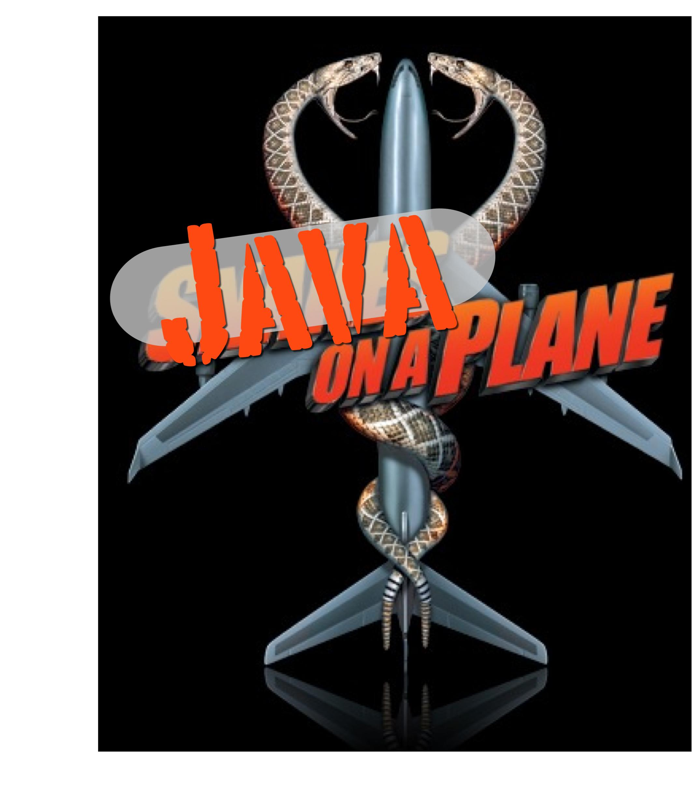

Chair of ACM SIGPLAN
Navigation
Contact
College of Computer and Information Science
Northeastern University
440 Huntington Avenue
Boston, Massachusetts 02115
Cell:409.2176
email: j.vitek@neu.edu
skype: vitek_jan
I am interested in programming language technologies including but not limited to compilers, software engineering, real-time and embedded computing, and virtual machines. I dabble in information security, program analysis, concurrent and distributed programming and data analytics.
Projects
| AllR | Implementations of the R language and productivity tools | |
| DynJS | Dynamic analysis of JavaScript and benchmark generation |
|
| Transact | Transactional memory research | |
| oSCJ | An open implementation of Safety-Critical Java JSR-302 |
|
| CDx | An open real-time application benchmark for Java and C | |
| Ovm | An open-source virtual machine framework for Java | |
| STMBench | Benchmarking software transactional memory | |
| PrismJ | Software for a ScanEagle UAV with Java on board |  |
| MBA | Model-based protein backbone resonance assignment | |
| Fiji | High-performance real-time Java virtual machine |  |
| AJ | Data-centric concurrency control with the AJ compiler | |
| Thorn | A dynamically-typed distributed scripting language |
|
| FlexoTasks | Very low latency real time stream programming |
Service
Conference Chairs
| Program Chair | ||
| General Chair | ||
| General Chair | ||
| General Chair | | |
| Program Chair | ||
| Program Chair |
Events Organized
| Dynamic Languages for Scalable Data Analytics | ||
| Programming with Big Data | ||
| Workshop on Dynamic Languages for Scientific Computing | ||
| Trends in Concurrency | ||
| ECOOP Summer School | ||
| NSF Transactional Memory Workshop |
Program Committees
| Asian Symp. on Programming Languages and Systems | |
| Dynamic Languages Symposium | |
| Workshop on Libraries, Languages, and Compilers for Array Programming | |
| Workshop on Reproducible Research Methodologies and New Publication Models | |
| 20 years of Aliasing, IWACO@ECOOP | |
| Off-the Beaten Track | |
| Compiler Construction |
Activities
| Editor in Chief | Chair | ||
| Vice President | Vice Chair | ||
| Member, Advisory Board | Member, Expert Group | ||
| Member, SC | Member, SC | ||
| Member, SC | Member, SC | ||
| Member, SC | Member, SC | ||
| Member, SC | Member, SC | ||
| Member, SC |
Honors
| |
|
| |
Invited Talks
- The Rise of Dynamic Languages for Scientific Computing, MSR Faculty Summit 11 (Video)
- Is Java Ready for Real-time?, MVD 10, Invited talk (PDF)
- Of Scripts and Programs Tall tales, Urban Legends and Future Prospects, APLWACA 10 Invited Talk, DLS 09 Invited Talk, (PDF)
- Programming models for Real-time and Concurrency, TOOLS 09 Keynote, PLACES'08 (PDF)
- Language-based Intrusion Detection, Foundations of Computer Security, FCS 05
- Coordination and Security, International School on Foundations of Security Analysis and Design, FOSAD 04 (PDF)
[-] Past Events
- TiC'08 Organizer, Second International Summer School on Trends in Concurrency
- WG2.4 Organizer, IFIP WG2.4 meeting in Bormio
- ECOOP'08 Program Chair, European Conference on Object-Oriented Programming
- COORD'07 Program Chair, International Conference on Coordination Models and Languages
- TiC'06 Organizer, First International Summer School on Emerging Trends in Concurrency
- TRANSACT'06 General Chair, Languages, Compilers and Hardware for Transactional Computing
- VEE'05 Program Chair, First International Conference on Virtual Execution Environments
- TfT'05 Organizer, Dagstuhl Workshop on Types for Tools
- PLDI'05 Tutorial Chair, Conference on Programing Language Design and Implementation
[-] Past Program Committee Membership
- FOOL13
Foundations of Object-Oriented Languages - PLDI13
Programming Language Design and Implementation - ECOOP13
European Conference on Object Oriented Programming - HotPar13
Hot Topics in Parallelism - GPCE13
Generative Programming: Concepts & Experiences - ICOOOLPS13
Implementation, Compilation, Optimization of OO Languages - WASDeTT13
Academic Software Development Tools and Techniques - ISORC International Symposium on Object and component-oriented Real-time Computing, 2012.
- EMSOFT International Conference on Embedded Software, 2011.
- GCM International Workshop on Green Computing Middleware, 2011.
- PLASTIC Workshop on Programming Language And Systems Technologies for Internet Clients, 2011
- RTAS IEEE Real-Time and Embedded Technology and Applications Symposium, 2011.
- VEE'11 International Conference on Virtual Execution Environments, 2011.
- RTSS IEEE Real-Time System Symposium, 2009, 2010, 2011.
- CC International Conference on Compiler Construction, 2003, 2008, CC'12
- CSF IEEE Computer Security Foundations Symposium, 2008
- COORD International Conference on Coordination Models and Languages, 2005, 2009
- ICFP International Functional Programming Conference, 2005
- OOPSLA Object-Oriented Programming Systems, Languages, and Applications, 2000, 2004, 2007, 2008
- ESOP European Symposium on Programming, 2002, 2007, 2009, 2011
- ECOOP European Conference on Object-Oriented Programming, 1998, 2000, 2001, 2002, 2003, 2007, 2008, 2009, 2010, 2013.
- DATE DATE Conference, Model Based Design of Embedded Systems track, 2010
- PLDI Programming Language Design and Implementation, 2002, 2010, 2013.
- POPL Principles of Programming Languages, 2001, 2008, 2011
- DLS Dynamic Language Symposium Conference, 2010
- ICALP International Conference on Automata, Languages and Programming, 2000
- PODC Symposium on Principles of Distributed Computing, 20101
- ASA/MA Agent Systems and Applications/ Mobile Agents, 2001
- AISB Symposium on Software mobility and adaptive behaviour, 2001
- CD Component Deployment, 2002, 2004
- EUC IEEE/IFIP International Conference on Embedded and Ubiquitous Computing, 2009, 2010
- FOCLASA Foundations of Coordination Languages and Software Architectures, 2007
- MASS Symposium on Multi-Agent Security and Survivability, 2004
- PPPJ International conference on Principles and Practice of Programming in Java, 2006
- SACMAT Symposium on Access Control Models and Technologies, 2001
- AIOOL International Workshop on Abstract Interpretation of Object-oriented Languages, 2005
- ACP4IS Workshop on Aspects, Components, and Patterns for Infrastructure Software, 2003, 2004
- Bytecode Workshop on Bytecode Semantics, Verification, Analysis and Transformation, 2007, 2008
- CORDIE Workshop on Concurrency, Real-Time and Distribution in Eiffel, 2006
- CPS Workshop on Cyber-Physical Systems, 2008, 2009
- CSJP Workshop on Concurrency and Synchronization in Java Programs, 2004
- DOSW Distributed Object Security Workshop, 1999
- FTfJP Workshop on Formal Techniques for Java-like Programs, 2005
- HCSP Workshop on High Confidence Software Platforms for Cyber-Physical Systems, 2006
- ICOOOLPS Implementation, Compilation, Optimization of Object-Oriented Languages, Programs and Systems, 2006
- IWMSE International Workshop on Multicore Software Engineering, 2010
- IWACO International Workshop on Aliasing, Confinement and Ownership, 2003, 2007
- IWAOOS Intercontinental Workshop on Aliasing in Object-Oriented Systems, 1999
- JTRes Workshop on Java Technologies for Real-Time and Embedded Systems, 2008, 2007, 2006, 2005, 2004, 2003, 2008, 2009, 2010
- JFLA Journées Francophones des Langages Applicatifs, 2000, 1998, 1995
- MOS Mobile Objects Systems Workshop, 2004, 2003, 2002, 2001, 2000, 1999, 1998, 1997, 1996, 1995
- PLACES Programming Language Approaches to Concurrency and Communication-cEntric Software, 2009, 2010, 2011,
- 2012
- PLAS Workshop on Programming Languages and Analysis for Security, 2007
- OOPS Object Oriented Programming Languages and Systems 2005, 2004
- SecCo Workshop on Security Issues in Concurrency, 2003, 2004, 2007
- VMIL Workshop on Virtual Machines and Intermediate Languages, 2009
Students and Collaborators
Current PhD Students
Current Postdoctoral Associates
Gustavo Petri, Rafal Kolanski
Collaborators
Josh Auerbach, David Bacon, David Clarke, Giuseppe Castagna, Yvonne Coady, Toni Cunei, Grzeg Czakowski, Ananth Grama, Dan Grossman, John Field, Christian Grothoff, Rachid Guerraoui, Maurice Herlihy, David Holmes, Tony Hosking, Urs Hoelzle, Nigel Horspool, Suresh Jagannathan, Andreas Krall, Doug Lea, Jeremy Manson, Floreal Morandat, James Noble, Nate Nystrom, Manuel Oriol, Jens Palsberg, Jean Privat, Jesper Spring, Martin Schöberl, Bill Pugh, Peter Sewell, Rok Strinsa, Frank Tip, Olga Vitek, Dominic Duggan, Vivek Sarkar, Francesco Zappa Nardelli, Tian Zhao, Tobias Wrigstad
[-] Graduated students
Filip Pizlo, PhD'12 (Apple), Jacques Thomas, PhD'11 (Amazon), Jesper H. Spring, PhD'08@EPFL Rajeev Gopalakrishna, PhD'06 (Intel Research), Krzysztof Palacz, PhD'04 (Sun Research), Bogdan Carbunar, PhD'05 (Motorla Research Labs),
Nadya Ortiz, Msc'14 (Apple) Lei Zhao, Msc'14 (Microsoft) Fadi Meawads, Msc'13 (Google) Brandon Hill, Msc'13 (Oracle), Daniel Tang, MSc'11 (Google) Johan Ostlund, MSc'09 (UUPSALA), Hiroshi Yamauchi, MSc'07 (Google), Jason Baker, MSc'07 (Google), Andrei Madan, MSc'04 (Medtronics), Jason Fox MSc'03 (JPL), Gergana Markova MSc'03 (IBM), James Liang MSc '02, (Sandia)
Brian Burg BSc'10 Rob Gevers BSc'09, Zachary Wiggins, Andrew McClure, Paul Kuliniewicz, BSc'03, Javed Siddique, BSc'03, Allen Montz BSc'03, Ben Titzer BSc '02 (UCLA), Chris Willmore, Adam Lugowski, Josh Moore BSc'04, Wenchang Liu, BSc'03,
[-] Past Postdoctoral Associates
Marek Prochazka 03-04 (SciSys), Michael Richmond 02-03 (IBM Research), Jeremy Manson 05-06 (Google), Jean Privat 06-07 (Université du Quebec), Toni Cunei 03-08 (EPFL), Tobias Wrigstad 07-09 (Stockholm University), Tomas Kalibera 07-09 (Charles University), Sylvain Lebresne 08-09, Christian Hammer 09-11 (U Saarland), Ales Plsek 09-11 (Oracle) Floreal Morandat 11-12 (U Bordeaux), Nicholas Kidd 10-12 (Google), Gustavo Petri 12-13.
Teaching
| C Programming, F 11, S 12 | ||
| Software for Embedded Systems, S 11, S 12 | ||
| Programming Languages, F 08, S 10 | ||
| Embedded and Real-time Computing, F 09 | ||
| Principle of Programming Languages S 08, F 08, S 09 | ||
| Software Engineering, S 09 | ||
| Programming Languages, F 07, S 04, S 01 | ||
| Software Engineering, F 06, S 05, S 00, F 00, S 02 | ||
| Software Systems Seminar, F '06 | ||
| Virtual Execution Environments, S 06 | ||
| Software Engineering, S 05, S 03 | ||
| | Resource-aware computing, S 03. | |
| Security for Mobile Code, F 99 |
Grants
Active awards
- NSF OCI 1047962: A Tracing VM for Statistical Computing. (with Olga Vitek) 10-13.
Short Biography
Jan Vitek is a Professor of Computer Science and University Faculty Scholar. He is the Chair of the ACM Special Interest Group on Programming Languages (SIGPLAN), the vice chair of AITO and of the IFIP WG 2.4, and is Chief Scientist at Fiji Systems. He holds a PhD from the University of Geneva and a MSc from the University of Victoria. He works on various aspects of programming languages including virtual machines, compilers, software engineering, real-time and embedded computing, concurrency and information security. Prof. Vitek led the Ovm project which resulted in the first succefull flight test of real-time Java virtual machine. With Noble and Potter, Vitek proposed the notion of ownership for alias control, which became known as ownership types. He chaired PLDI, ISMM and LCTES and was program chair of ESOP, ECOOP, VEE, Coordination, and TOOLS. Vitek has started a number of successful workshop series, including MOS on Mobile Objects, IWACO, on aliasing and confinement, and TRANSACT on transactional memory. He is on the steering committees of ECOOP, JTRES, TRANSACT, ICFP, OOPSLA, POPL, PLDI and LCTES. He is a member of the JSR-302 Safety Critical Java expert group.
Miscellaneous
Advice on graduate studies. How to get your paper accepted at OOPSLA, rejection advice. Graduate advice by Micheal Ernst. Tips on interviewing.


|
Is there any risk of brain damage? Eternal Sunshine of the Spotless Mind |